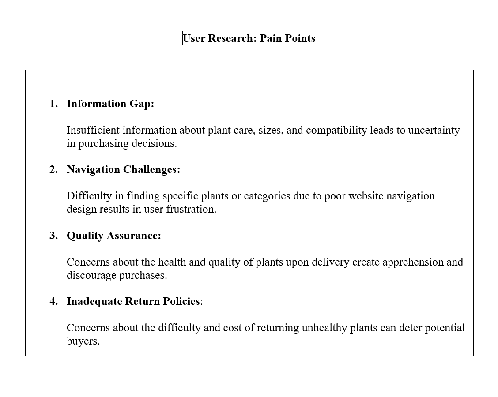
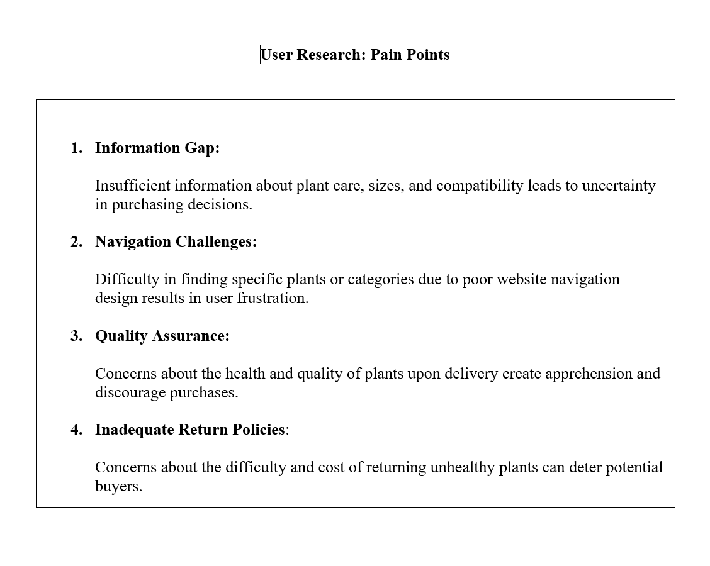
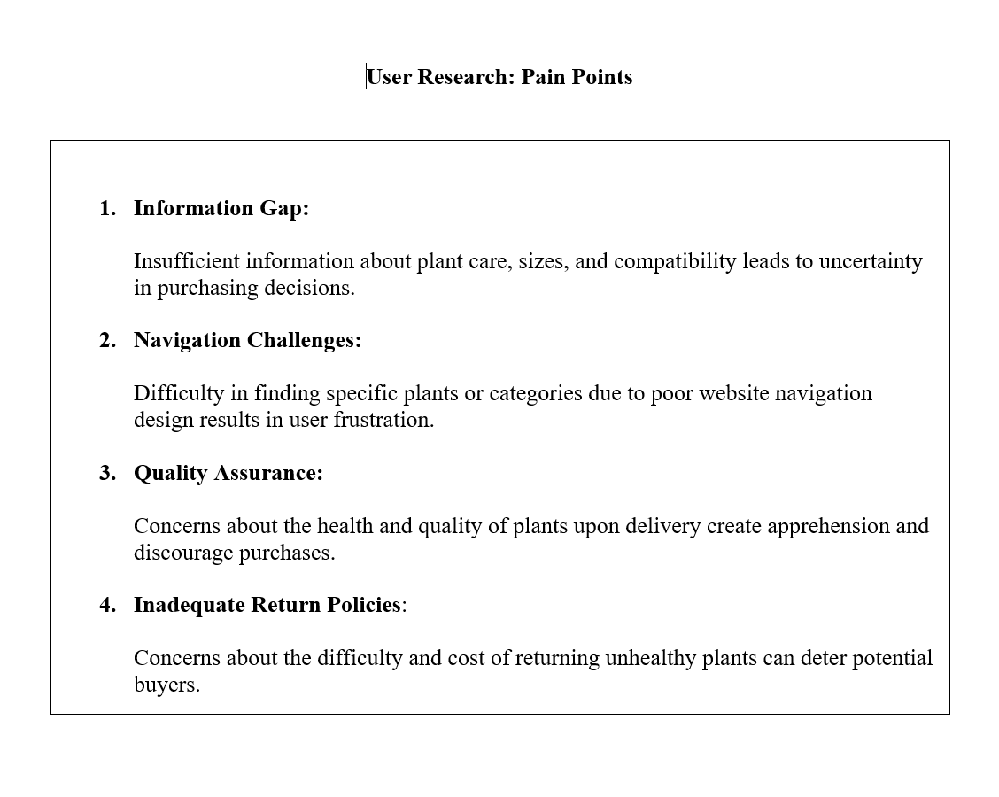

User Research
.png) 

The product:A responsive website for a plant shop that showcases a wide variety of plants, provides care tips, allows for online shopping, and highlights the shop's unique collection and expertise.
Project duration:July 2024 to November 2024
Problem:The plant shop lacks a dedicated online platform, making it difficult for plant enthusiasts to browse collections, learn about plant care, or purchase plants conveniently online.
Goal:To design and develop an engaging and user-friendly website that effectively promotes the plant shop, provides valuable plant care information, and streamlines the plant shopping experience for users.
My role:As the lead designer and developer, I was responsible for conducting research, creating the design, developing the plant shop website, and ensuring a seamless user experience across all devices..
The project goal:To create a visually appealing and functional website that enhances customer engagement, improves the plant shop's online visibility, and increases sales by offering a convenient online shopping experience for plant enthusiasts.
Local plant lovers, visitors to the area, and people who enjoy gardening, looking for an easy way to shop for plants and get plant care tips online.

Sketches or Wireframes: Basic sketches of the website layout, showing the placement of key elements without design details.
Digital Wireframe: Refined versions of wireframes created with design software, providing clearer structure and alignment.
Low-Fidelity Prototype: Interactive version of digital wireframes, focusing on usability and basic functionality without detailed design.
Usability Study: A usability study tests the website with real users to assess ease of use, navigation, and overall experience. Participants perform tasks while observers note any difficulties, providing insights to improve the design and better meet user needs.
High-Fidelity Prototype: Detailed, polished version resembling the final product, including colors, typography, images, and interactive features.
Impact: The new Plant Shop website will enhance online visibility, simplify the shopping experience with detailed product descriptions and an easy purchasing process, and increase overall sales. It will attract new customers, boost satisfaction and loyalty among plant enthusiasts, and strengthen the shop’s brand image, driving business growth.
What was learned: Throughout the design process for the Plant Shop website, I gained valuable insights into the importance of focusing on user needs and preferences. By conducting in-depth user research, including surveys, interviews, and competitor analysis, I learned to identify customer pain points and design solutions that address them effectively. Understanding the importance of detailed plant care information, easy online purchasing, and a seamless mobile experience has underscored the areas where the website can make the biggest impact on improving the overall user experience
Next steps:Moving forward, the next steps for the Plant Shop website project include several key actions. First, prototype testing will be conducted to gather user feedback and refine the design before launch. Following that, content creation will focus on developing engaging and informative text, including plant care guides and high-quality visuals to enhance storytelling. Technical development will then begin to implement the design using an appropriate technology stack. Finally, the website will be launched and promoted to drive traffic, with ongoing improvements based on user feedback and analytics, ensuring the platform evolves to meet the changing needs of its customers over time.